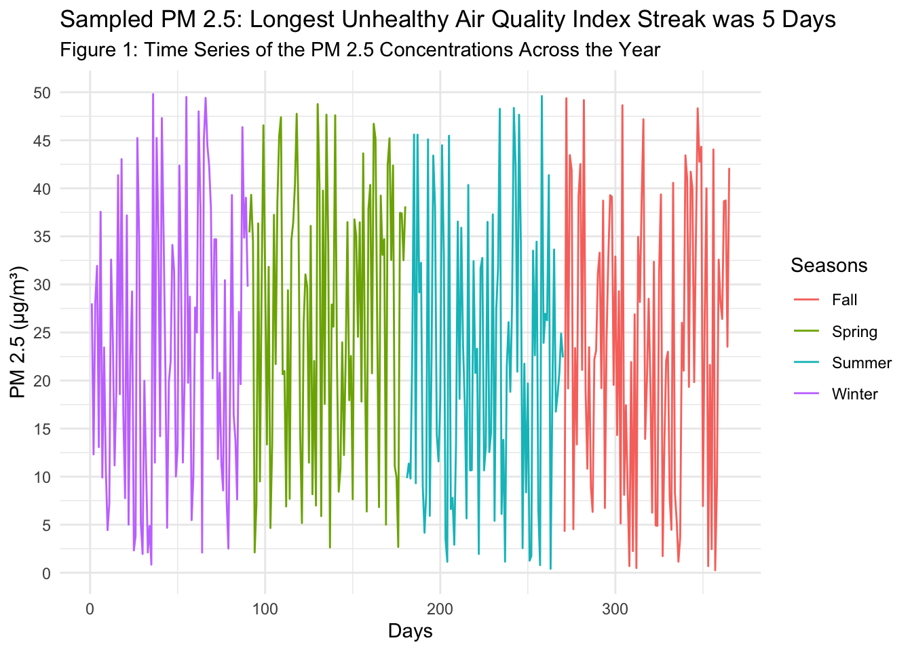
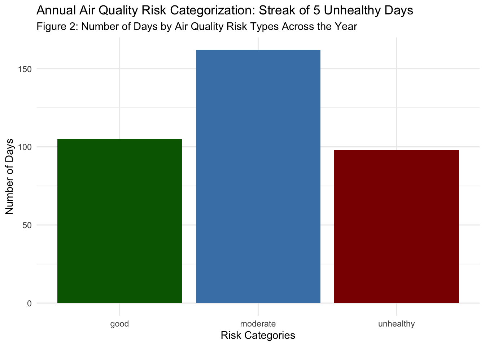

library(dplyr)
library(tidyverse)
#creating data
day = 1:365
day
pm25 = runif(min=0, max=50, n=365)
pm25
risk = NA
seasons <- case_when(
day %in% 1:90 ~ "winter",
day %in% 91:180 ~"spring",
day %in% 181:270 ~ "summer",
day %in% 271:365 ~ "fall")
seasons
seasons <- as.factor(seasons)
data <- data.frame(seasons = seasons,
pm25 = pm25,
day = day,
risk = risk)
datahomework_3
Part 1: Build the Dataset
Part 2 – Classify Risk with a For Loop
# setting a named variable for the threshold makes the code easier to read
unhealthy = 35.4
moderate = 12
good = 0
max_unhealthy_streak = 0
current_streak = 0
for (i in 1:length(data$pm25)) {
data$risk[i] <-
ifelse(data$pm25[i] > unhealthy, "unhealthy",
ifelse(data$pm25[i] >= moderate, "moderate", "good"))
if (data$risk[i] == "unhealthy") {
if (i == 1 || data$risk[i - 1] == "unhealthy") {
current_streak <- current_streak + 1
} else {
current_streak <- 1
}
} else {
current_streak <- 0
}
if (current_streak > max_unhealthy_streak)
max_unhealthy_streak <- current_streak
}
max_unhealthy_streak[1] 5Part 3 – Seasonal Summary with a For Loop
# setting a named variable for the threshold makes the code easier to read
day_unhealthy <- c(winter = 0, spring = 0, summer = 0, fall = 0)
for (i in 1:length(data$day)) {
if(data$risk[i] == "unhealthy") {
seasons_i <- data$seasons[i]
day_unhealthy[seasons_i] <- day_unhealthy[seasons_i] + 1
}
}
day_unhealthy winter spring summer fall
26 33 18 21 library(data.table)
Attaching package: 'data.table'The following objects are masked from 'package:lubridate':
hour, isoweek, mday, minute, month, quarter, second, wday, week,
yday, yearThe following object is masked from 'package:purrr':
transposeThe following objects are masked from 'package:dplyr':
between, first, lastseasonal_uh <- data.table(season = names(day_unhealthy),
unhealthy_days = as.integer(day_unhealthy))
seasonal_uh season unhealthy_days
1: winter 26
2: spring 33
3: summer 18
4: fall 21Part 4 – Visualize and Report
library(ggplot2)
pm25_annual_season <- ggplot(data, aes(x=day, y=pm25, color=seasons)) +
geom_line() +
labs(colour = "Seasons",
title = sprintf("Sampled PM 2.5: Longest Unhealthy Air Quality Index Streak was %d Days", max_unhealthy_streak),
subtitle = "Figure 1: Time Series of the PM 2.5 Concentrations Across the Year",
x = "Days",
y = "PM 2.5 (µg/m³)") +
scale_color_discrete(labels = c("Fall", "Spring", "Summer", "Winter")) +
scale_y_continuous(breaks = seq(0, 50, by = 5)) +
theme_minimal()
pm25_annual_season
risk_counts <- data %>%
group_by(risk) %>%
summarise(n_days = n())
risk_counts# A tibble: 3 × 2
risk n_days
<chr> <int>
1 good 105
2 moderate 162
3 unhealthy 98risk_cat_plot <- ggplot(risk_counts, aes(x=risk, y=n_days, fill = risk)) +
geom_col(fill = c("darkgreen", "steelblue", "darkred")) +
labs(title = sprintf("Annual Air Quality Risk Categorization: Streak of %d Unhealthy Days", max_unhealthy_streak),
subtitle = "Figure 2: Number of Days by Air Quality Risk Types Across the Year",
x = "Risk Categories",
y = "Number of Days") +
guides(fill="none") +
theme_minimal()
risk_cat_plot
Results:
The seasonal ‘for loop’ analysis (seasonal_uh) revealed that spring had the highest number of unhealthy air quality index (AQI) days based on PM 2.5 concentrations (>35.4 µg/m³). This pattern is also evident in the annual PM 2.5 time series (Fig. 1), where spring concentrations fluctuate more dramatically than in other seasons, though the seasonal differences are difficult to distinguish visually from the time series alone. Winter had the second highest number of days (seasonal_uh). This seasonal pattern suggests that pollution sources are tied to late-winter transitioning into spring conditions. Potential sources include agricultural burning, wind-driven dust, or temperature-inversion events, while winter contributors likely include residential heating and stagnant air masses. From a management standpoint, these findings demonstrate the need for season-specific interventions rather than uniform year-round measures. Intervention strategies could involve enhanced public advisories and sensitive-group protections during spring and winter, stricter enforcement of emissions controls during high-risk months, and investment in real-time AQI alert systems for schools, elder-care facilities, and outdoor workers. Across the year, the number of moderate AQI days exceeded both the number of unhealthy and good days, accounting for nearly 50% of days, while unhealthy days accounted for approximately 30% (Fig. 2). The relatively small share of “good” days (<20%, Fig. 2) also indicates that this community is operating with little air-quality buffer, meaning that even modest increases in emissions or adverse weather could push a substantial number of days into unhealthy territory.
Put your quarto and a rendered version (pdf or html) in your GitHub repository for this assignment. You can use the same repository you created for HW2, but make you name the files clearly (or put in a new directory) so that I can find them. For example, you could put the quarto file in a new directory called “HW3” and name it something like “HW3_air_quality.qmd”.
Turn in your GitHub repo link on Canvas